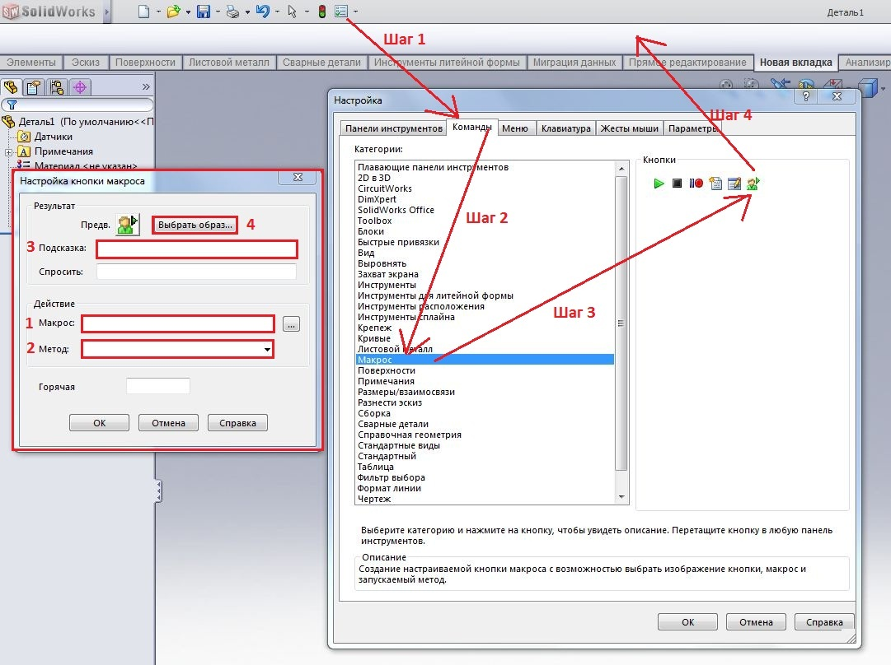
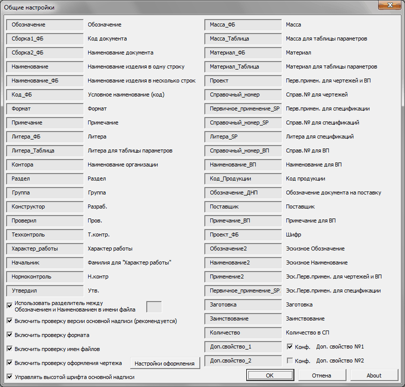
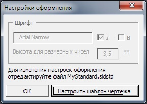

Установка и настройка |
Top Previous Next |
|
Установка
1.Содержимое архива распаковать в любое место на диске. Внимание, нельзя переименовывать и удалять содержащиеся в архиве файлы и папки. Макросы связаны между собой и используют общие файлы. 2.Вынести на панель SW кнопки макросов:
- Шаг1:Инструменты - Шаг2:Настройка - Шаг3:Команды - Шаг4:Макрос - Шаг5: Удерживая нажтой клавишей мыши, кнопку с зеленым человечком перетащить на панель. - Шаг6: В появившемся окне "Настройка кнопки макроса" выбрать макрос (1) образ (4) и ввести подсказку к кнопке (3). Убедится, что в качестве метода выбран метод с названием Имя_макроса_run.main. (2) Для макроса SaveAsPDF можно создать две дополнительные кнопки: ·с иконкой SaveAsPDF_wd.bmp и методом SaveAsPDF _main_wd. При нажатии данной кнопки не будут обновляться даты основной надписи. ·с иконкой SaveAsPDF_fd.bmp и методом SaveAsPDF _main_fd. При нажатии данной кнопки будет создаваться архивный экземпляр чертежа. 
3.Если используется более новая версия Solidworks, то перед первым использованием необходимо пересохранить все шаблоны с расширением .SLDDRW и .slddrt в текущую версию. 4.Для удаления комплекта макросов просто удалите каталог SWPlus с диска и кнопки макросов с панели SW. Макросы не создают никаких записей в реестре и в системных каталогах.
Настройка
Перед первым использованием необходимо произвести настройку макросов. Данная настройка необходима в том случае, если используемые на вашем предприятии шрифт и имена свойств файлов отличаются от тех, что заданы в макросах по умолчанию. В описаниях макросов приведены окна настроек. Указанные там настройки не являются дефолтными или рекомендуемыми. Пожалуйста, настройте макросы в соотвествии с вашим стилем работы. 1.Настройка стандарта оформления. a.Создайте новый чертеж, зайдите в Инструменты-Параметры-Свойства документа-Загрузить из внешнего файла и выберите MyStandard.sldstd в папке SpecEditor. b.Измените параметры шрифта и прочие настройки стандарта в соответствии с вашими требованиями. c.Cохраните отредактированный чертежный стандарт под прежним именем (с заменой). d.Закройте чертеж без сохранения. 2.Настройка свойств и шаблонов основных надписей . a.Запустите макрос Master; b.Выберите Настройки-Общие настройки.  c.Задайте имена свойств. (Если вы раньше не использовали свойства, можно оставить те, что установлены по умолчанию) Можно указать имена для двух дополнительных свойств Доп. свойство №1 и Доп. свойство №2, заполнение которых доступно из макроса MProp. При установленном флажке Конф. свойство может иметь разные значения для отдельных конфигураций. d.Снимите/установите галочки для проверок. Если будет установлена Проверка оформления, то нажмите кнопку Настройки оформления.  и, затем, Настроить шаблон чертежа. К вашему шаблону чертежа будут применены настройки из файла MyStandard.sldstd. На поле Шрифт отображены основные параметры для шрифта, заданные в данный момент в файле MyStandard.sldstd. Затем нажмите ОК, чтобы выйти из окна Настройки оформления. Использовать разделитель между Обозначением и Наименованием в имени файла. При установленном флажке макросы будут искать указанный символ разделителя в имени файла для определения Обозначения и Наименования. При снятом флажке, имя файла будет рассматриваться как Обозначение, независимо от наличия или отсутствия символа разделителя. Данная опция будет сказываться на автоматическом заполнении полей Обозначение и Наименование в макросе MProp и, при включенной проверке имен файлов, на формировании и проверке имени файла в макросах SaveDRW и SaveAsPDF. Включить проверку версии основной надписи. Данная опция затрагивает работу макросов MProp, DProp, SpecEditor, SaveDRW и SaveAsPDF. При включенной опции макросы будут контролировать версию форматки для активного чертежа. Версия считывается из маленькой заметки в правом нижнем углу чертежа. Контроль версий необходим для гарантии корректного отображения свойств в полях основной надписи. Включить проверку формата Данная опция затрагивает работу макросов MProp, DProp, SpecEditor, SaveDRW и SaveAsPDF. Используется для контроля правильности считывания форматов листов чертежа в соответствующее свойство модели. Считывание формата из чертежа происходит каждый раз при использовании указанных макросов Включить проверку имен файлов Проверка происходит в макросах SaveDRW и SaveAsPDF. Данная опция включает проверку соответствия имени файла чертежа определенным правилам наименования. Правила следующие: Для чертежей деталей: Имя файла чертежа = Имя файла модели Для сборочных чертежей: Имя файла чертежа = Имя файла модели Для ГЧ, схем и прочего: Имя чертежа = Имя файла модели + код (ГЧ, Э3 и т.д.) Код документа берется из соответствующего свойства, заполняемого макросом MProp. При сохранении чертежа с помощью макроса SaveDRW правильное имя чертежа создается автоматически. Включить проверку оформления чертежа Данная опция затрагивает работу макросов Master, MProp, DProp, SpecEditor, SaveDRW и SaveAsPDF. при включенной опции в макросах DProp, SpecEditor, SaveDRW и SaveAsPDF производится проверка соответствия чертежа чертежному стандарту, сохраненному в файле MyStandard.sldstd. Управлять высотой шрифта основной надписи При включении данной опции к свойствам Наименование_ФБ, Материал_ФБ, Литера_ФБ, Литера_Таблица, Масса_ФБ, Сборка2_ФБ добавляются символы управления высотой шрифта, что позволяет лучше вписать текст в поля основной надписи чертежа. e.Нажмите ОК и выйдите из окна общих настроек. f.Введите путь для сохранения шаблонов основных надписей (slddrt) и параметры шрифта*. g.Нажмите Настроить шаблоны. К шаблонам будут применены выбранные параметры шрифта и имена свойств. h.Нажмите ОК. i.Нажмите Создать основные форматы и дождитесь окончания работы макроса j.При необходимости создайте дополнительные кратные форматы. 3.Настройка SpecEditor a.Откройте любой сборочный чертеж и запустите макрос SpecEditor b.Выберите Настройки-Список разделов c.Добавьте используемые у вас разделы спецификации d.Выберите Настройки-Группы разделов «Стандартные изделия» и «Прочие изделия» e.Задайте группы f.Выберите Настройки-Группы раздела «Материалы» g.Задайте группы h.Задайте параметры шрифта* и коэффициенты сжатия. i.Нажмите ОК. 4.Настройка MProp. a.Запустите макрос MProp и нажмите Настройки. b.Задайте имя для основной базы материалов, если вы планируете использовать проверку материала моделей на предмет использования единой базы материалов. c.Нажмите ОК. 5.Настройка файлов стандартных и прочих. Макрос Sprop. a.Для корректной работы макроса SpecEditor с файлами стандартных изделий, используемых на вашем предприятии необходимо предварительно заполнить свойства данных файлов с помощью макроса SProp (см. SProp). 6.Настройка сохранения PDF или TIFF. a.Скачайте и установите программу PDFCreator версии 1.2.1 или выше. Эта программа необходима для работы макроса SaveAsPDF. PDFCreator позволяет сохранять чертежи в PDF без искажений, которые присутствуют во встроенном сохранении SW. b.После установки PDFCreator отредактируйте файл SaveAsPDF.ini установив необходимый режим и формат сохранения (см. SaveAsPDF). * Параметры шрифта недоступны, если задана Проверка оформления. В этом случае все параметры шрифта определяются файлом стандарта MyStandard.sldstd в папке SpecEditor. |